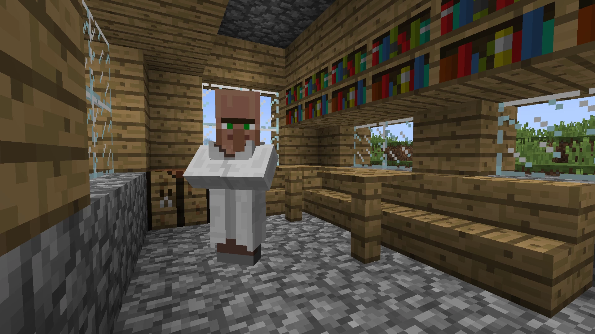
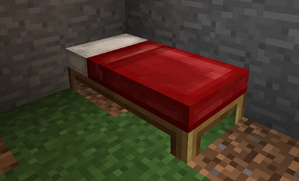

Villager behavior
Now the villagers will be finally smarter! if they are in a 1x1 trading cell or they don't sleep they will get angry with you and stop trading.


The only way to trade with them back is to get them a home (more than a 1x1) and a bed for them to sleep. As soon as the villager has space and the bed to sleep his behavior will turn back to normal!